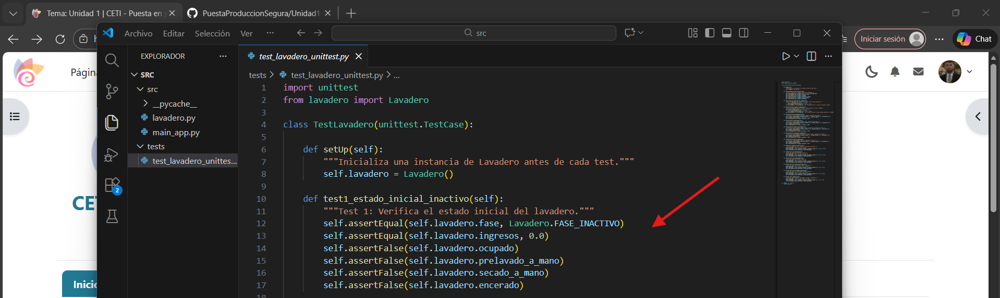
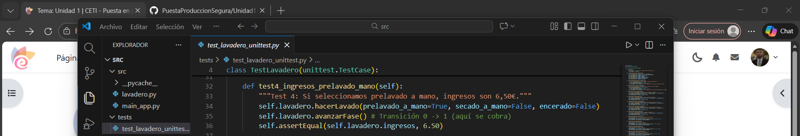
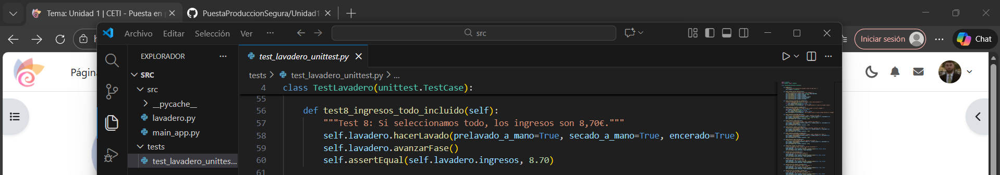
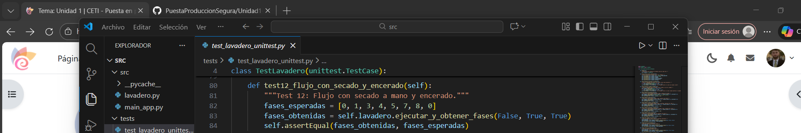
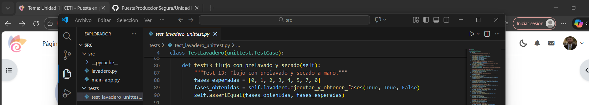
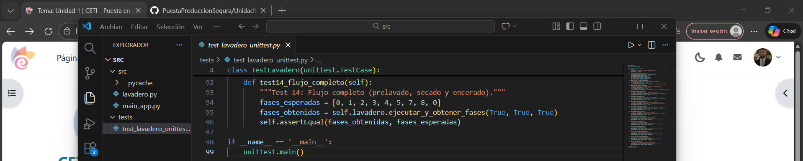

En este apartado, lo que vamos a realizar es una serie de test basándonos en el enunciado de la tarea, el cual nos menciona una serie de 14 pruebas.
En la carpeta proporcionada en la tarea, se nos proporciona un ejemplo de test, pero este no nos servirá de mucho, simplemente para fijarnos en como desarrollar más o menos las pruebas.
Se nos menciona que el código contiene errores, pero estos errores ya los hemos solucionado previamente, lo cual quiere decir que las pruebas no deberían arrojar ni un solo error, por lo que dichas pruebas nos van a servir para comprobar que el código está perfectamente estructurado.
14 test basándonos en los enunciados
1. Cuando se crea un lavadero, éste no tiene ingresos, no está ocupado, está en fase 0 y todas las opciones de lavado (prelavado a mano, secado a mano y encerado) están puestas a false.

2. Cuando se intenta comprar un lavado con encerado pero sin secado a mano, se produce una ValueError.

3. Cuando se intenta hacer un lavado mientras que otro ya está en marcha, se produce una ValueError.

4.Si seleccionamos un lavado con prelavado a mano, los ingresos de lavadero son 6,50€.

5.Si seleccionamos un lavado con secado a mano, los ingresos son 6,00€.

6.Si seleccionamos un lavado con secado a mano y encerado, los ingresos son 7,20€.

7.Si seleccionamos un lavado con prelavado a mano y secado a mano, los ingresos son 7,50€.

8.Si seleccionamos un lavado con prelavado a mano, secado a mano y encerado, los ingresos son 8,70€.

9.Si seleccionamos un lavado sin extras y vamos avanzando fases, el lavadero pasa por las fases 0, 1, 3, 4, 5, 6, 0.

10.Si seleccionamos un lavado con prelavado a mano y vamos avanzando fases, el lavadero pasa por las fases 0, 1, 2, 3, 4, 5, 6, 0.

11.Si seleccionamos un lavado con secado a mano y vamos avanzando fases, el lavadero pasa por las fases 0, 1, 3, 4, 5, 7, 0.

12.Si seleccionamos un lavado con secado a mano y encerado y vamos avanzando fases, el lavadero pasa por las fases 0, 1, 3, 4, 5, 7, 8, 0.

13.Si seleccionamos un lavado con prelavado a mano y secado a mano y vamos avanzando fases, el lavadero pasa por las fases 0, 1, 2, 3, 4, 5, 7, 0.

14.Si seleccionamos un lavado con prelavado a mano, secado a mano y encerado y vamos avanzando fases, el lavadero pasa por las fases 0, 1, 2, 3, 4, 5, 7, 8, 0.

Ejecución del test
Como he mencionado antes, vamos a ejecutar el test para verificar que todas las corrwcciones que hemos realizado con anterioridad dan solución a todos los problemas.
Para ejecutarlo, abriremos la consola, y escribiremos py test_lavadero_unittest.py -v:

Como podemos observar, todo ha funcionado correctamente, lo cual indica que hemos solventado todos los errores que contenía el código en un principio, y por lo tanto, el programa estaría listo para ponerse en marcha en un negocio real.
Los 14 test se han ejecutado con éxito, los tests de "flujo" confirman que el coche pasa exactamente por las fases que debe según los extras elegidos y no se desvían a otros, los mensajes de (COBRADO: ...) que podemos observar al final confirman que los precios (6.50€, 7.20€, 8.70€, etc.) son los correctos tras las correcciones que he realizado anteriormente, los tests 2 y 3 confirman que el programa lanza las excepciones adecuadas cuando se intenta hacer algo prohibido (como encerar sin secar).